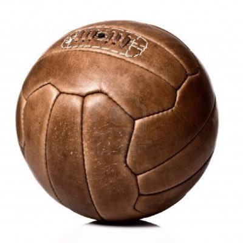
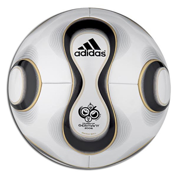
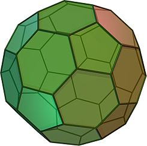
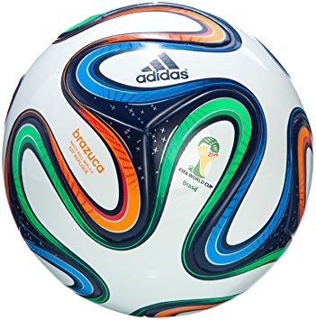

Historia de los Balones
En la antigua China se ocupó un cuero crudo, los griegos y los romanos ocuparon vejigas infladas. Todos estos intentos en pos de encontrar un balón lo más redondo posible.
En ese proceso de búsqueda destaca el primer balón de caucho vulcanizado diseñado y construido en 1836 por Charles Goodyear, posiblemente el más esférico, pero también el más duro.
En el año 1863 se establecieron las primeras reglas del fútbol, pero no fue hasta el año 1872 que los organismos oficiales del balompié determinaron que las pelotas de fútbol debían tener una forma esférica, una circunferencia de entre 68, 58 y 71, 12 centímetros, un diámetro entre 21.65 y 22.29 cm y un peso entre 368 y 425 gramos. Su presión de inflado es de 1,6 a 2,1 atmósferas.
Luego vino el material que los hizo más resistentes a la lluvia y con una mayor vida útil, que fue el cuero sintético en el año 1960.
Cambios Mínimos
Desde ahí en adelante los cambios fueron mínimos hasta que en Alemania 2006 apareció el modelo “Teamgeist”, que en alemán significa “espíritu de equipo”. Principalmente destaca su diseño esférico, su configuración innovadora de 14 paneles (frente a los 32 de antaño), por lo cual la superficie exterior es completamente lisa y redonda, cualidad que agrega así la precisión, tanto en el disparo como en el control del balón. El balón de futbol utilizado en la actualidad es, desde un punto de vista geométrico, un icosaedro truncado, el que más se aproxima a la forma de una esfera con 12 aristas y veinte triángulos el cual a la hora de ser estirado queda en una figura con doce pentágonos y veinte hexágonos, o sea 32 caras.

La cubierta de una pelota profesional, por lo general cuenta con 32 paneles y está hecha de piel sintética. En el caso de Brazuka, el balón utilizado en el Mundial de Brasil, se incorporó una estructura simétrica de seis paneles idénticos y una nueva superficie que proporciona al jugador una mayor adherencia, contacto, estabilidad y aerodinámica sobre el terreno de juego.

Es importante destacar que hoy en día la FIFA define tres estándares de calidad para un balón de fútbol. El primero es el “Aprobado por la FIFA”, el cual presenta la certificación más exigente y que debe aprobar un análisis de laboratorio donde se mide peso, absorción de agua, el rebote, elasticidad y las medidas.
Luego viene el “Inspeccionado por la FIFA” y el “Balón Internacional Estándar”. Para que una pelota de fútbol sea ocupada en un partido oficial debe contar con mínimo uno de estos niveles.